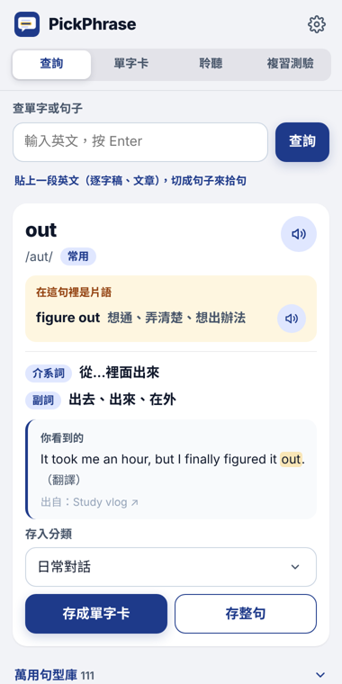
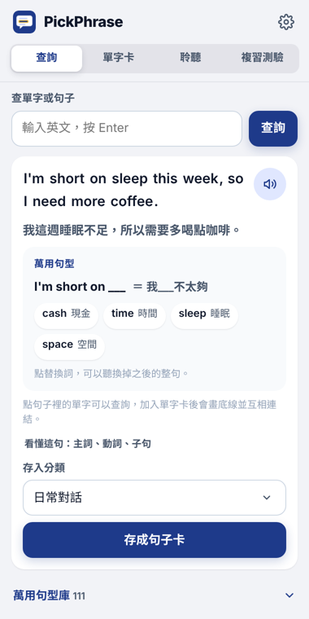
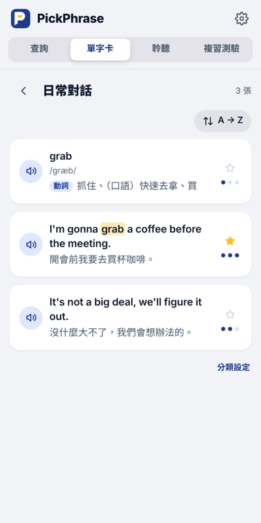

把 YouTube 上聽到的好句子，變成你專屬的聽力清單
看影片時點一下就查字、存句子。拾句幫你標出片語和萬用句型，再用重複聆聽與間隔複習，讓這些句子真的變成你的。
拾句建檔，重複聆聽，讓英文變得越來越簡單！

三個步驟，把句子變成你的
不用換平台、不用另外找教材。你本來就在看的 YouTube，就是最好的英文課本。
看影片，點一下
在 YouTube 字幕或任何英文網頁點字，馬上看到這個字在這句裡的意思。
拾起好句子
喜歡的句子一鍵存下，連同影片出處一起建檔，之後點一下就能回到原影片。
重複聽、定期複習
把存下的句子變成聽力清單，依照遺忘曲線提醒你複習，越記越牢。
為台灣學習者設計的功能
全部在你的電腦上執行，查字典不需要網路。
看懂「這句裡」的意思
依照原句判斷詞性，把對的解釋排在第一個，並標出常用度：常用、一般、少見。
自動認出片語
每個字都認識、合起來卻聽不懂？拾句會認出 375 個常用片語，連中間夾字的也認得出來。
萬用句型，換個詞就能用
存下的句子會自動標出句型，點替換詞就能聽到整句，明天開會就派得上用場。
聽力清單
把句子分類循環播放，可以調語速、選聲音，英文後面接中文，通勤做家事都能聽。
間隔複習
採用 FSRS 記憶演算法，在你快忘記的時候提醒複習，每天上限可以自己設，不會越積越多。
貼上逐字稿也能拾句
把 YouTube 逐字稿、文章或 email 貼進來，自動拿掉時間碼、切成一句一句，挑喜歡的存下來。
實際畫面


方案
電腦版免費使用。想在手機上複習、跨裝置同步，再升級會員。
免費版
- YouTube 與網頁點字查詢
- 單字卡、句子卡
- 片語偵測、萬用句型庫
- 聽力清單、間隔複習與測驗
會員
- 手機 App：通勤時聽、隨時複習
- 電腦與手機自動同步
- 更多會員功能陸續推出
常見問題
拾句是免費的嗎？
電腦版的 Chrome 擴充程式免費使用。之後推出的手機 App 與跨裝置同步屬於會員功能。
我的卡片存在哪裡？製作者看得到嗎？
卡片存在你自己的電腦上；開啟同步後，存在你自己的 Google 雲端硬碟。拾句沒有伺服器，製作者看不到你的資料。詳見隱私權政策。
需要網路嗎？
查單字使用內建字典，不需要網路。句子翻譯使用 Chrome 內建的翻譯功能，在你的電腦上執行，第一次使用時 Chrome 會自動下載翻譯模型。
可以用在 YouTube 以外的網站嗎？
可以。任何英文網頁都能選取文字查詢、存成卡片，也可以把逐字稿或文章貼進拾句切成句子。
支援哪些瀏覽器？
目前支援 Chrome（電腦版）。使用其他以 Chromium 為基礎的瀏覽器可能可以安裝，但句子翻譯需要 Chrome 內建的翻譯功能。
遇到問題或想建議功能？
歡迎寫信到 pickphrase@gmail.com，也可以在拾句的設定頁按「問題與意見回饋」。